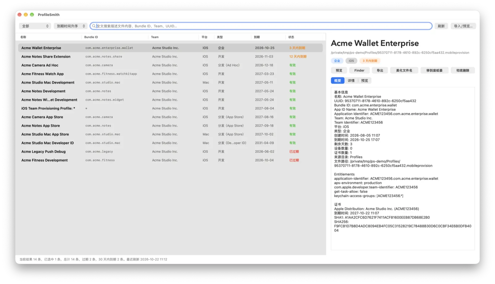

已过期
「文件 → 清理过期描述文件…」确认后把全部过期项一次性移到废纸篓。
描述文件档案馆 · macOS 12+
ProfileSmith 自动索引本机所有 .mobileprovision / .provisionprofile，一眼看清哪些快过期、属于哪个 Team、绑定了哪些证书和 Entitlements，并支持导入、导出与批量清理。
PS-A · 到期看板
状态列与菜单栏图标会标出已过期和 30 天内到期的描述文件，剩余天数随每次刷新重新计算。
「文件 → 清理过期描述文件…」确认后把全部过期项一次性移到废纸篓。
显示剩余天数，用「30 天内到期」筛选单独列出，及早在开发者后台续签。
按开发、分发、企业、Mac 等条件筛选，列表支持多列排序。
PS-B · 功能索引
识别 iOS 开发 / Ad Hoc / App Store / 企业，以及 Mac 开发 / App Store / Developer ID 描述文件。
PS-C · 实物照片
左侧是全部描述文件，右侧是概要、详情与预览。截图中的描述文件均为演示数据。

PS-D · 拆封检视
预览 IPA、XCArchive、App、App Extension 的 Info.plist 与内嵌描述文件。预览 IPA 时只解压需要的两个文件，并在后台完成，大体积 IPA 也不会卡住界面。
在 Finder 中右键描述文件 →「打开方式 → ProfileSmith」：未导入的自动导入，已存在的直接定位。
PS-E · 工具架
PS-F · 领用登记
需要 macOS 12.0 或更高版本。不确定芯片类型？打开「苹果菜单 › 关于本机」查看「芯片」或「处理器」，或在终端执行 uname -m。
arm64，Intel 芯片选 x86_64。